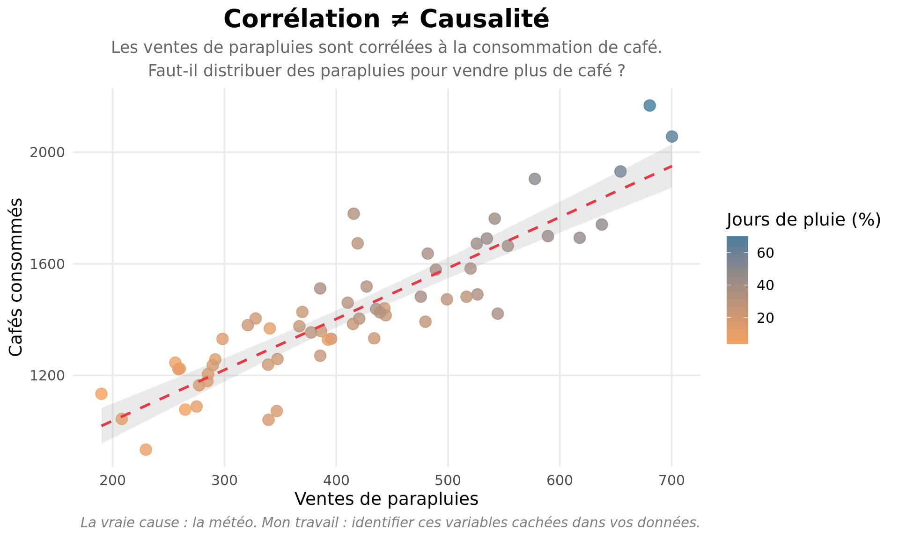

Transformez vos données en décisions.
Data scientist basé au Japon, j’aide les entreprises à séparer ce qu’elles savent vraiment de ce qu’elles croient savoir.
Analyse causale, marketing analytics, stratégie d’entrée au Japon.
Le problème
Vous avez des données. Mais avez-vous des réponses ?
La plupart des entreprises croient que plus de données = meilleures décisions. En réalité, elles se noient dans les corrélations sans jamais toucher la causalité.
“Notre campagne a généré +15% de ventes” — Vraiment ? Ou le marché montait déjà ?
“Ce segment est plus rentable” — Mais pourquoi ? Et que faire concrètement ?
Je ne construis pas des dashboards. J’offre de la clarté.
Ce que j’apporte
🎯 Decision Science
Aller au-delà des corrélations. Identifier ce qui cause vraiment vos résultats, quantifier l’incertitude, prendre des décisions robustes même avec des données imparfaites.
📊 Marketing Analytics
Comprendre ce qui fonctionne vraiment : attribution rigoureuse, segmentation actionnable, pricing basé sur la valeur perçue — pas sur l’intuition.
🇯🇵 Business France-Japon
10+ ans au Japon. Je traduis les données et les cultures. Stratégie d’entrée, adaptation produit, négociation interculturelle.
Découvrir mes services en détail →
Pour qui ?
Je travaille avec :
- Des PME et ETI qui veulent des réponses, pas des rapports
- Des équipes marketing qui cherchent à prouver (ou invalider) leurs intuitions
- Des entreprises françaises qui veulent réussir au Japon sans perdre 2 ans en tâtonnements
Mon approche
Rigueur. Clarté. Action.
Mon approche combine analyse causale et raisonnement bayésien. Concrètement : chaque analyse aboutit à une recommandation actionnable et une quantification claire de l’incertitude.
Vous saurez ce que vous pouvez affirmer — et ce qui reste à vérifier.
Parcours
Près de 10 ans d’expérience au Japon
Trilingue français, japonais, anglais
Data Scientist spécialisé en analyse causale et approche bayésienne
Terrain + Technique : Je comprends les réalités business autant que les méthodes statistiques
Basé à Tokyo, je travaille avec des clients en France, au Japon et à l’international
Derniers articles
Prêt à y voir clair dans vos données ?
Réservez un appel découverte de 30 minutes. On identifie ensemble si je peux vous aider, et comment.
Pas de pitch. Pas d’engagement. Juste une conversation.